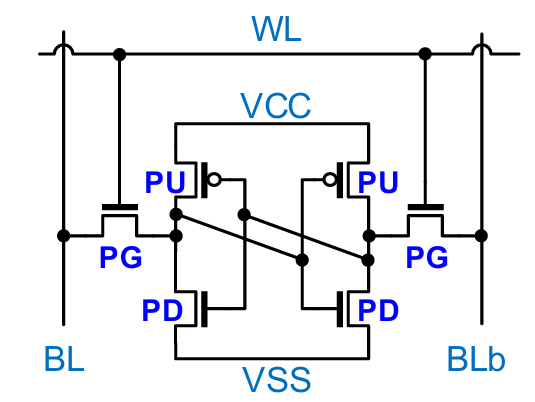
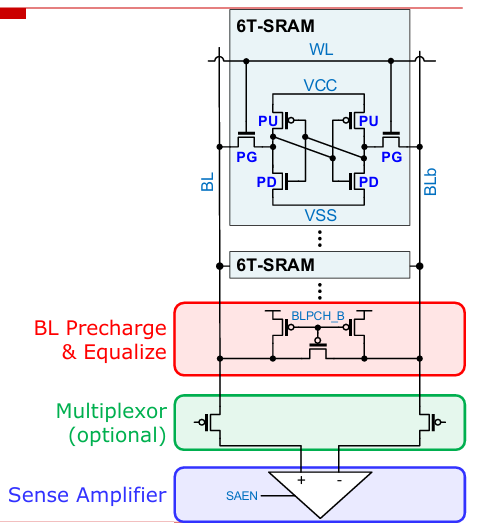
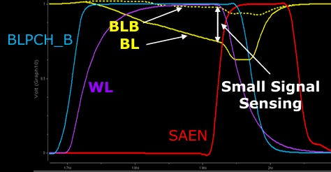
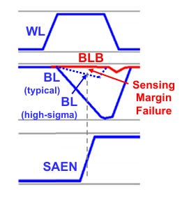
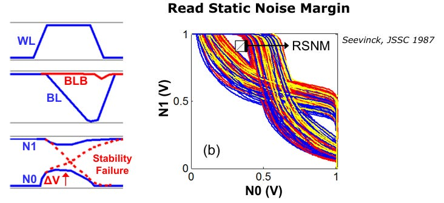
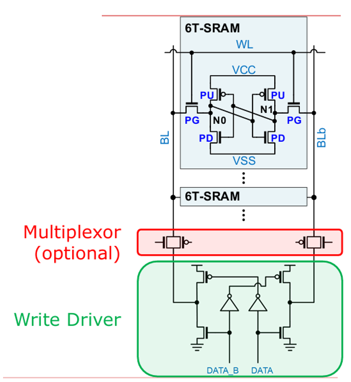
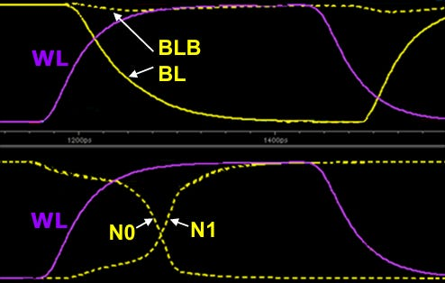
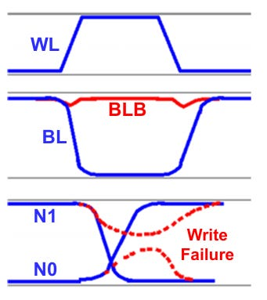

一篇付费站的SRAM长文。本文交付其中公开免费段的完整中文翻译(6T SRAM全基础)与真实原理图；订阅号付费段落(阵列扩展/互连/FinFET-GAA)因被墙仅作存在性提示。可结合内容核对每张图出自Introduction其原刊。
SRAM是可与逻辑晶体管同片集成的记忆体中速度最快的一种，却被容量与成本卡住，通常只够做片上小块的本地缓存。在LLM应用里，SRAM的重要性或许排在HBM之后排第二：它是KV Cache从HBM被读取后最先落脚的暂存处。SRAM尺寸直接决定本地可备给算子的最多数据量；SRAM越大，与HBM之间的内存往返就越少，内存带宽密度与算子间就越匹配。
也因此，作者认为搞AI的研究者与硬件工程师都应该懂一点嵌入式SRAM的基础与约束，大家都盼着更大的SRAM bank。本篇理论素材主要来自作者在ISSCC 2026旁听的大师课：Memory and Logic Circuit Design in Technologies Beyond FinFET，讲师是Intel的Zheng Guo，内容把FinFET/GAA工艺下SRAM的真实非理想效应与扩展挑战讲得很全。本文其余面向HBM的更多内容要等Hot Chips之后另起一篇。
SRAM常在电路 课程当作业让本科生设计与优化一个存储单元，因为它在最个把尺度上演示了晶体管怎么被物理实现、怎么参与集成接线与fab的设计规则。工程师往往会把单元与阵列的PPA压到不能再紧，这本身就说明SRAM单元必须在功耗、性能与面积上同时做到极致。
6T SRAM用一个交叉耦合反相器对来存状态：两个反相器各把输出接到对方输入，形成静态锁存。具体用到三种管：上拉PMOS接在VCC与内部节点之间；下拉NMOS接在GND/VSS与节点之间；每个内部节点还通过由wordline电压开启的NMOS传输管pass gate连到bitline上。普通逻辑里PMOS的W/L偏大，因为PMOS的孔迁移率通常低于NMOS的电子迁移率；但SRAM里反而是下拉NMOS做得很大，原因见后。

strong与weak常和fast/slow混为一谈，而这两组词在模拟、数字与存储工程师嘴里又有不同含义。当晶体管工作在饱和区时电流由公式v决定，这类用法适合用来控流，SRAM里pass gate就工作在饱和区、让读电流流过。设计者能控制管长管宽：L越短、W越宽则电流越大，W/L高的开关算强。公式里还有几项设计者控制不了但必须计入变化的量：电子/孔迁移率、栅氧电容Cox、阈值电压Vth。
模拟世界里这些器件参数被拢进3 sigma角模型，即SS、SF、FS、FF这四种NMOS/PMOS组合。3 sigma代表片上工艺变化里系统的波动范围：晶圆中心一粒die可能相对边缘die在某个参数上有系统性偏移，谁都不想把大片晶圆只因这系统性偏移而报废。这些角模型去微调各种影响电路速度、驱动电流与偏置的内部FET参数，由fab在其工艺控制(PCM)电路里标定联相关；设计者既改不了也看不着这些模型。每搭一个模块都须在这些角模型上做足够的蒙特卡洛仿真来保证抗变异性：作者说这种低技术含金量的活正是AI很适合去自动化的一类。
量产时fab还会故意把一lot里少数晶圆做歪成SS/SF/FS/FF的分裂样，供PTE(电测试)与后硅验证去筛，用以正确量化良率；die出自晶圆哪个位置都有记录。良率取决于所造器件里的最差器件:由百万乃至万亿个重复晶体管组成的SRAM/数字电路要把良率做到6到7 sigma，而只有几百几个手工调过晶体管的模拟电路只需3到4 sigma。
步骤：(1)bitline先用BLPCH_B这一信号预充并等化到VDD；(2)wordline置位开启PG，使两根bitline上出现差分信号，其中一根BL靠读电流放掉BL电容被拉低，读的过程中PG与PD构成电阻分压让SRAM内部电压微抬，但不能高到翻状态；(3)若多根线共享同一个sense amp，可选地使能MUX；(4)过一段时间sense amplifier触发并把这段差分放大到足以区分0与1。line放得太慢或太快会有两种非理想。

放得太慢会出现读错误与信噪比(SNR)退化：感知到的差分信号不足最小阈值。它受电路所有参数影响，包括读电流、BL漏电、bitline电容与sense amp的偏置电压。

放得状态翻转属于稳定性失效：当内部节点电压抬得太高，加上晶体管失配，电荷注入可能让不该翻的时刻把存储状态翻掉，常用读静噪容限(read static noise margin)度量。给NMOS/PMOS尺寸目标取不同相对比例，会带来一大片不同的读稳定性表现。



步骤：输入DATA/DATA_B先把其中一根线从VDD拉到GND，然后WL置位，去更新内部节点N0/N1的电平。要成功写进0或1，写驱动PD与PG的串联组合必须明显强于(即电阻更低)cell内部上拉PU。这个由PG与PU的尺寸之比决定：比例过高则锁存翻不动，产生写边距(write margin)失效。


读与写的边距相互对立，导致一块SRAM只有在器件相对尺寸落在某一个可运行的区域内才可用。存在三种边界会造成低边距：NMOS偏弱时读电流不可接受；PMOS与NMOS都强时漏电流不可接受；PMOS偏弱时最小工作电压Vmin不可接受。取决于bank的大小，需要用高sigma的方法去刻画工艺波动、找那个保证SRAM不越区的全局最优点，6到7 sigma是黄金标准。像Siemens Solido这类ML辅助工具就会去搜这块设计空间，因为暴力仿真跑到6-7 sigma会吃掉大量算力与license。SRAM单元还能为存内计算而改造，那部分作者在其AI加速器全景一文详述。
常见的紧凑实现如下:横向的poly线是控制电流的栅极，纵向的沟道走电流，VDD与地在cell的上下两侧。SRAM是逻辑/存储工程师都应懂的最基础存储，也是加速器里真正决定片上能放多少KV cache的高密度块。
作者本文其后单列了扩展与挑战章节：大SRAM阵列扩展的难点、SNR与互连RC、常用的优化/辅助技术、为嵌入式SRAM单元优化晶体管尺寸、以及在FinFET与GAA工艺上设计SRAM的机会与挑战。这些段落位于Silicon Co-Design的付费墙之内，公开页面仅给出标题大纲，未提供正文，故本文无法也不应代其复述或臆造细节。若你订阅了该刊，可直接在原文读到对应小节；也希望某天作者开放后我们能补上。
参考：https://www.siliconcodesign.com/p/a-deep-dive-into-sram-the-staging